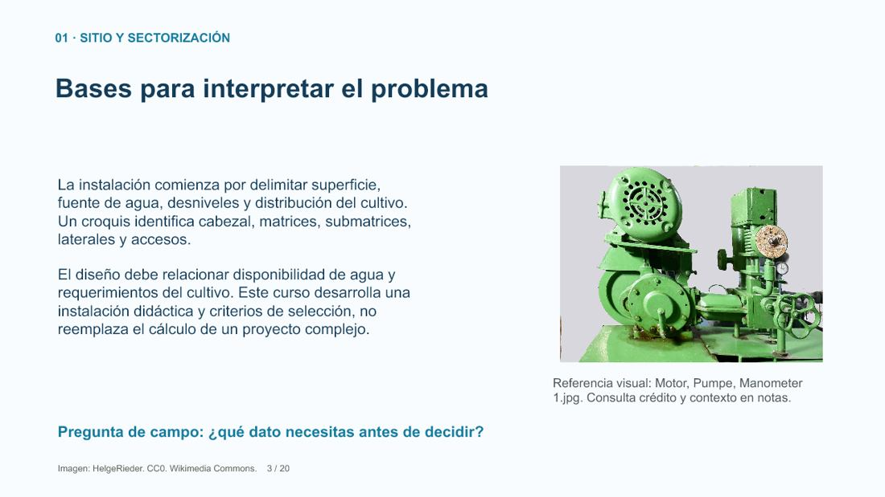
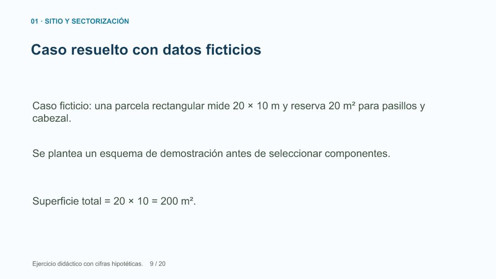
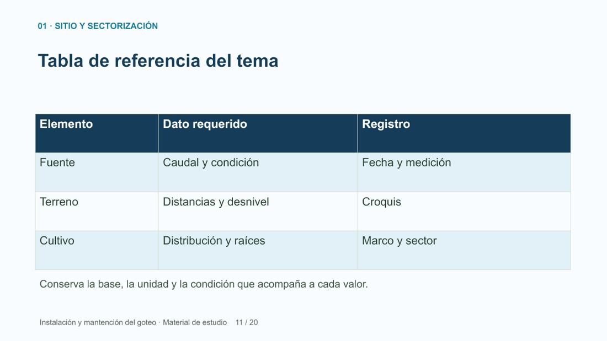

CLASE GRATUITA · SIN REGISTRO
Levantamiento del sitio y croquis de instalación
Extracto de Instalación y mantención del riego por goteo. Cuatro diapositivas de la primera presentación. El curso completo tiene 12 temas.
DIAPOSITIVA 1 DE 4 · ORIGINAL 1

Leer explicación y fuentes
Levantamiento del sitio y croquis de instalación
Instalación y mantención del riego por goteo
José Ignacio Farías · Ingeniero Agrícola
DIAPOSITIVA 2 DE 4 · ORIGINAL 3

Leer explicación y fuentes
Bases para interpretar el problema
La instalación comienza por delimitar superficie, fuente de agua, desniveles y distribución del cultivo. Un croquis identifica cabezal, matrices, submatrices, laterales y accesos.
El diseño debe relacionar disponibilidad de agua y requerimientos del cultivo. Este curso desarrolla una instalación didáctica y criterios de selección, no reemplaza el cálculo de un proyecto complejo.
DIAPOSITIVA 3 DE 4 · ORIGINAL 9

Leer explicación y fuentes
Caso resuelto con datos ficticios
Caso ficticio: una parcela rectangular mide 20 × 10 m y reserva 20 m² para pasillos y cabezal.
Se plantea un esquema de demostración antes de seleccionar componentes.
Superficie total = 20 × 10 = 200 m².
DIAPOSITIVA 4 DE 4 · ORIGINAL 11

Leer explicación y fuentes
Tabla de referencia del tema
Conserva la base, la unidad y la condición que acompaña a cada valor.
Practica con un caso
- Caso ficticio: una parcela rectangular mide 20 × 10 m y reserva 20 m² para pasillos y cabezal.
- Se plantea un esquema de demostración antes de seleccionar componentes.
Un rectángulo de 15 × 8 m reserva 12 m² de paso. Calcula área cultivable propuesta.
Ver resolución y explicación
15 × 8 − 12 = 108 m². Hay que comprobar la distribución real.
- Superficie total = 20 × 10 = 200 m².
- Superficie cultivable propuesta = 200 − 20 = 180 m².
- Dibujar fuente, pendientes, sentido de laterales y acceso para comprobar viabilidad en terreno.
Cuaderno de muestra
Tres páginas del material del estudiante. Puedes leerlas en el navegador o guardarlas.
Abrir cuaderno PDF Descargar PDFCréditos de la presentación de origen
.jpg){kind=link}


.jpg){kind=link}